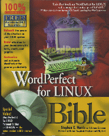

The WordPerfect for Linux Bible is an excellent resource for learning what was once the most common word processor available. Nearly seven hundred pages of instruction, very clearly written, detail almost everything you would want to know about the Linux version of WordPerfect.
A complete version--yes, you read that correctly--of WordPerfect 8 Personal Edition comes on the CD with the book, with over 5,000 clip art images and 140 fonts, as well as KDE 1.1. This is obviously a bargain, as the book and CD together are only $40 USD.
The first chapter covers installation in a reasonably thorough manner. In Chapter Two, a general overview of the WordPerfect environment is given in the form of a tutorial on writing a letter. This explains the basics of text entry in WordPerfect, the Spell-As-You-Go auto-correction feature, selecting and manipulating text, and saving your document.
We begin to delve into detail in Chapter Three, which covers the WordPerfect interface. This includes such things as getting around the screen, keystrokes, title bars and fine-tuning the document window display. In the fourth chapter, we move into formatting, with the Format-As-You-Go feature, drop caps and QuickFormatting. Chapter Five goes over WordPerfect help, including the PerfectExpert.
Part II begins with a cautionary chapter on safeguarding your work--timed backups, undo and Corel Versions are all discussed. WordPerfect actually has a miniature file manager, which is what Chapter Seven covers. In the eighth chapter, you learn about the wonderful world of Linux fonts--including the necessity of actually installing them. Adding clip art and other images to your documents is the subject of Chapter Nine, as well as inserting line art, boxes, and the WP Draw tools. Chapter Ten explains how to print your documents the way you want them printed--booklets, envelopes, print jobs and printer settings are all here.
If you want to take your document and publish it on the Web, Chapter Eleven is for you. While WordPerfect may not be the most advanced web editor (and it certainly doesn't try to be), it is useful for quick publication, and this chapter will show you how to do just that.
Since WordPerfect is predominantly used for writing actual documents, Part III centers on the tools you would use in penning concise, grammatically correct prose. Chapter Twelve helps you learn to use the spell checker, how to find that word on the tip of your tongue that is still eluding you, and how to write in French, Spanish, German, or any of the other languages that WordPerfect supports. Editing techniques--text selection, finding and replacing, bookmarks and comments--are discussed in the thirteenth chapter. In Chapter Fourteen, you learn how to get your pages numbered just right. The fifteenth chapter covers document formatting in detail: justification, paragraph formatting, styles, margins, headers, watermarks and so on. Tables and columns are explained in Chapter Sixteen.
For those budding novelists, Part IV covers working with large documents. This includes bullets and outlines (Chapter Seventeen), document references such as footnotes, lists and tables of contents (Chapter Eighteen) and multipart documents (Chapter Nineteen).
Part V centers on more advanced usage, such as templates, styles in full detail, calculations and formulas, sorting information, equations and charting data. The final section focuses on customization: the WordPerfect preferences, the toolbar and menu customization, and mass producing with labels and merge. And, of course, macros.
I would seriously recommend this book for those who are interested in WordPerfect and its Linux port. Not only does it come with the full version on CD, but it is well-written, humorous at times and easy to understand.
Ben Crowder has been heavily involved with computers for the past ten years, in almost every aspect (programming, graphics, networking, music, and just about anything else you can think of). He has been working with Linux for the past two and a half years, and has loved every second of it. In his spare time, he enjoys reading, writing, music, and tweaking things on his Linux box. He currently lives in Utah and can be reached at mlcrowd@enol.com.